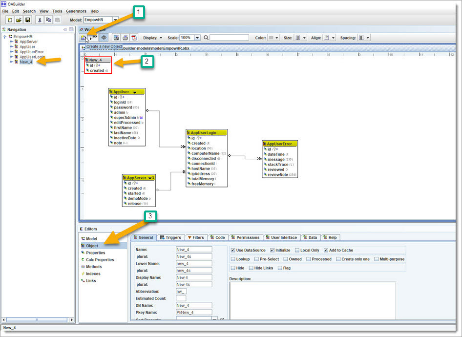
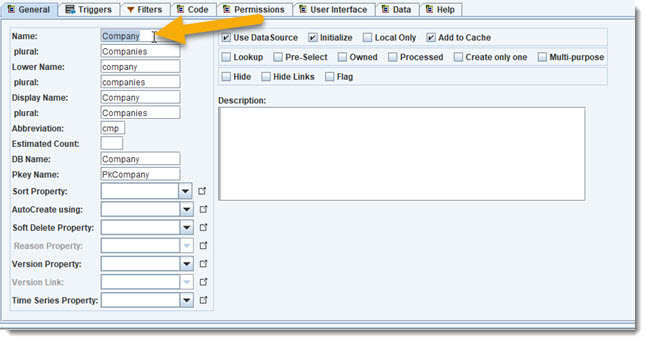
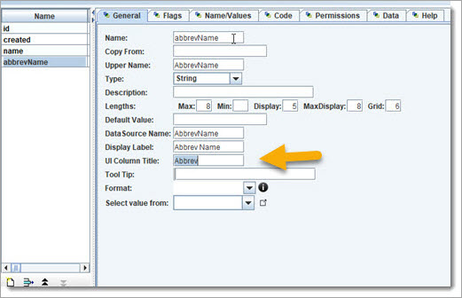
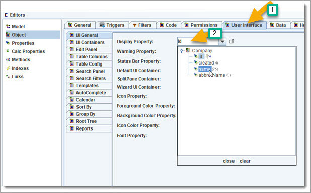

Add first Object
Let us add the main Objects, starting with Company. Click on the workspace toolbar "create new Object" (far left). This will create an empty object in the workspace.

Change the Object name to "Company", and the other fields will automatically be updated to match.
Use the Object Editor to make the following change:

That is all we need for now, let us add some properties. The properties for "id" and "created" are already added by default. Note: the Id property is an auto
assigned sequence number, and is the unique identifier - a good idea to use for most/all objects.
To create properties, let us start off with "name". Click on
the Properties editor and click on the new button.

and add abbrevName

Change the UI column title to "Abbrev".
Ok, now we have a Company Object, with properties. Let us update a couple of other things in the "User Interface" tab.
Select name as the "Display Property".

While in the UI tab, go ahead and add the table columns for Company, and the Search properties.
Table columns.

Search properties.

The Company Object is now created with a few properties. We can now add to the Application's Main UI and test it.
Adding to the Application UI is done by
going to the Model Editor and choosing App UI tab.
Add a new node for "Company" by clicking the new button and using the mouse to drag into position in the tree.
Change the name to "Company".
Click on the "Add ..." button and select Company from the popup.

Note: always save your model changes. By default, all previous versions of the model will be stored in a backup subdirectory under the directory where you are saving
your Model.
example: ./backup/202105011310_EmpowHR.obx
 ReGen & Run:
ReGen & Run:
Click on menu item "Generators/Generate All" and regenerate the application,
and rerun the Eclipse config for EmpowHr.
This shows the Company search window.

This shows the Company editor.

<![endif]>
 Review: we created the first Object for Company and can create new, search, and edit/update/delete.
Review: we created the first Object for Company and can create new, search, and edit/update/delete.